spThis document shows example images created with objects represented by one of the classes for spatial data in packages sp. The sp_gallery.Rmd and sp_gallery.R files are available here, or on github. This html file was generated from the R markdown file (sp_gallery.Rmd) by
library(knitr)
knit2html("sp_gallery.Rmd", options="toc")
and the corresponding .R file by
purl("sp_gallery.Rmd")
In case you load the .Rmd file in rstudio and press Knit HTML,
or alternatively load the .R file and run Source with Echo
(ctrl-shift-enter), you may see slightly different plots, which is
due to the different defaults for plotting device and dimension.
The Meuse data set is loaded using a demo script in package sp,
library(sp)
demo(meuse, ask = FALSE, echo = FALSE) # loads the meuse data sets
class(meuse)
## [1] "SpatialPointsDataFrame"
## attr(,"package")
## [1] "sp"
The North Carolina SIDS (sudden infant death syndrome) data set
is available from package maptools, and is loaded by
library(maptools)
## Checking rgeos availability: TRUE
library(rgdal) # for readOGR
## Loading required package: methods
## rgdal: version: 1.1-3, (SVN revision 594)
## Geospatial Data Abstraction Library extensions to R successfully loaded
## Loaded GDAL runtime: GDAL 2.0.1, released 2015/09/15
## Path to GDAL shared files: /usr/local/share/gdal
## Loaded PROJ.4 runtime: Rel. 4.9.2, 08 September 2015, [PJ_VERSION: 492]
## Path to PROJ.4 shared files: (autodetected)
## Linking to sp version: 1.2-2
nc <- readOGR(system.file("shapes/", package="maptools"), "sids")
## OGR data source with driver: ESRI Shapefile
## Source: "/home/edzer/R/x86_64-pc-linux-gnu-library/3.2/maptools/shapes/", layer: "sids"
## with 100 features
## It has 14 fields
proj4string(nc) <- CRS("+proj=longlat +datum=NAD27")
The basic plot command on a Spatial object gives just the geometry, without axes:
plot(meuse)
axes can be added when axes=TRUE is given; plot elements can be added incrementally:
plot(meuse, pch = 1, cex = sqrt(meuse$zinc)/12, axes = TRUE)
v = c(100,200,400,800,1600)
legend("topleft", legend = v, pch = 1, pt.cex = sqrt(v)/12)
plot(meuse.riv, add = TRUE, col = grey(.9, alpha = .5))

For local projection systems, such as in this case
proj4string(meuse)
## [1] "+init=epsg:28992 +proj=sterea +lat_0=52.15616055555555 +lon_0=5.38763888888889 +k=0.9999079 +x_0=155000 +y_0=463000 +ellps=bessel +towgs84=565.4171,50.3319,465.5524,-0.398957388243134,0.343987817378283,-1.87740163998045,4.0725 +units=m +no_defs"
the aspect ratio is set to 1, to make sure that one unit north equals one unit east. Even if the data are in long/lat degrees, an aspect ratio is chosen such that in the middle of the plot one unit north approximates one unit east. For small regions, this works pretty well; also note the degree symbols in the axes tic marks:
crs.longlat = CRS("+init=epsg:4326")
meuse.longlat = spTransform(meuse, crs.longlat)
plot(meuse.longlat, axes = TRUE)
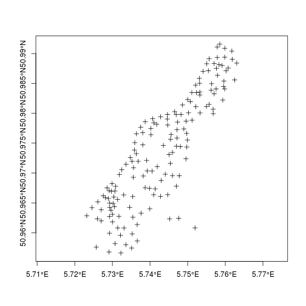
which looks different from the plot where one degree north (latitude) equals one degree east (longitude):
plot(meuse.longlat, asp = 1)

Instead of axes with ticks and tick marks, maps often have
graticules, a grid with constant longitude and latitude lines.
sp provides several helper functions to add graticules, either
in the local reference system, or in long/lat. Here is an
example of the local reference system:
plot(meuse)
plot(gridlines(meuse), add = TRUE)
text(labels(gridlines(meuse)))
title("default gridlines within Meuse bounding box")
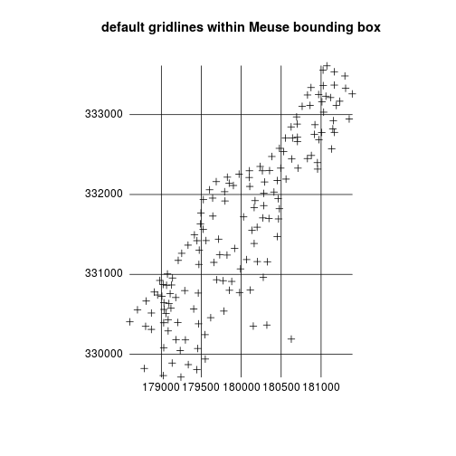
grd <- gridlines(meuse.longlat)
grd_x <- spTransform(grd, CRS(proj4string(meuse)))
plot(meuse)
plot(grd_x, add=TRUE, col = grey(.8))
text(labels(grd_x, crs.longlat))
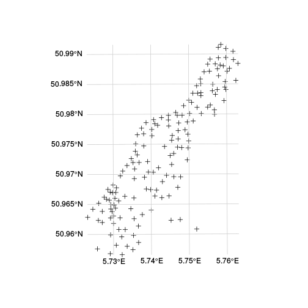
These lines look pretty straight, because it concerns a small area. For
# demonstrate axis labels with angle, both sides:
maps2sp = function(xlim, ylim, l.out = 100, clip = TRUE) {
stopifnot(require(maps))
m = map(xlim = xlim, ylim = ylim, plot = FALSE, fill = TRUE)
p = rbind(cbind(xlim[1], seq(ylim[1],ylim[2],length.out = l.out)),
cbind(seq(xlim[1],xlim[2],length.out = l.out),ylim[2]),
cbind(xlim[2],seq(ylim[2],ylim[1],length.out = l.out)),
cbind(seq(xlim[2],xlim[1],length.out = l.out),ylim[1]))
LL = CRS("+init=epsg:4326")
bb = SpatialPolygons(list(Polygons(list(Polygon(list(p))),"bb")), proj4string = LL)
IDs <- sapply(strsplit(m$names, ":"), function(x) x[1])
stopifnot(require(maptools))
m <- map2SpatialPolygons(m, IDs=IDs, proj4string = LL)
if (!clip)
m
else {
stopifnot(require(rgeos))
gIntersection(m, bb) # cut map slice in WGS84
}
}
m = maps2sp(c(-100,-20), c(10,55))
## Loading required package: maps
##
## # ATTENTION: maps v3.0 has an updated 'world' map. #
## # Many country borders and names have changed since 1990. #
## # Type '?world' or 'news(package="maps")'. See README_v3. #
##
##
## Loading required package: rgeos
## rgeos version: 0.3-16, (SVN revision (unknown))
## GEOS runtime version: 3.5.0-CAPI-1.9.0 r4084
## Linking to sp version: 1.2-2
## Polygon checking: TRUE
sp = SpatialPoints(rbind(c(-101,9), c(-101,55), c(-19,9), c(-19,55)), CRS("+init=epsg:4326"))
laea = CRS("+proj=laea +lat_0=30 +lon_0=-40")
m.laea = spTransform(m, laea)
sp.laea = spTransform(sp, laea)
library(methods) # as
plot(as(m.laea, "Spatial"), expandBB = c(0.05, 0.05, 0, .1))
plot(m.laea, col = grey(.8), add = TRUE)
gl = gridlines(sp, easts = c(-100,-80,-60,-40,-20), norths = c(20,30,40,50))
gl.laea = spTransform(gl, laea)
plot(gl.laea, add = TRUE)
text(labels(gl.laea, crs.longlat))
text(labels(gl.laea, crs.longlat, side = 3:4), col = 'red')
title("curved text label demo")
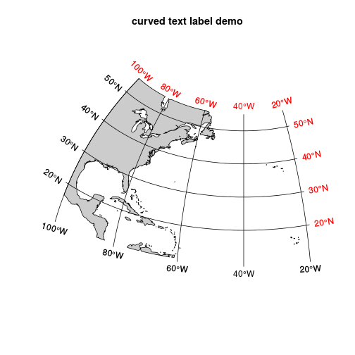
# polar:
pts=SpatialPoints(rbind(c(-180,-70),c(0,-70),c(180,-89),c(180,-70)), CRS("+init=epsg:4326"))
gl = gridlines(pts, easts = seq(-180,180,20), ndiscr = 100)
polar = CRS("+init=epsg:3031")
plot(spTransform(pts, polar), expandBB = c(.05,0,.05,0))
gl.polar = spTransform(gl, polar)
lines(gl.polar)
l = labels(gl.polar, crs.longlat, side = 3)
l$pos = NULL # pos is too simple, use adj:
text(l, adj = c(0.5, -0.5))
l = labels(gl.polar, crs.longlat, side = 4)
l$srt = 0 # otherwise they end up upside-down
text(l)
title("grid line labels on polar projection, epsg 3031")
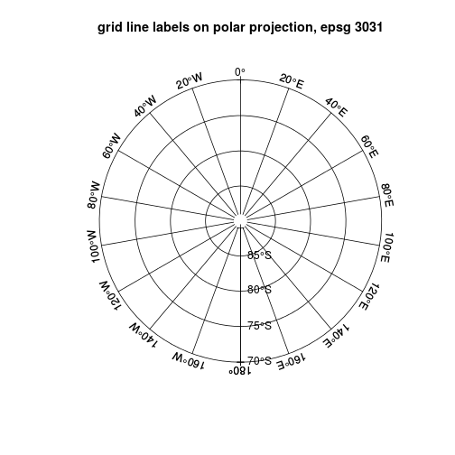
m = maps2sp(xlim = c(-180,180), ylim = c(-90,-70), clip = FALSE)
gl = gridlines(m, easts = seq(-180,180,20))
polar = CRS("+init=epsg:3031")
gl.polar = spTransform(gl, polar)
plot(gl.polar)
plot(spTransform(m, polar), add = TRUE, col = grey(0.8, 0.8))
l = labels(gl.polar, crs.longlat, side = 3)
# pos is too simple here, use adj:
l$pos = NULL
text(l, adj = c(0.5, -0.3), cex = .85)
l = labels(gl.polar, crs.longlat, side = 2)
l$srt = 0 # otherwise they are upside-down
text(l, cex = .85)
title("grid line labels on polar projection, epsg 3031")

The following plot shows polygons with county name as labels at their center point:
plot(nc)
invisible(text(coordinates(nc), labels=as.character(nc$NAME), cex=0.4))

This plot of a SpatialPolygonsDataFrame uses grey shades:
names(nc)
## [1] "AREA" "PERIMETER" "CNTY_" "CNTY_ID" "NAME"
## [6] "FIPS" "FIPSNO" "CRESS_ID" "BIR74" "SID74"
## [11] "NWBIR74" "BIR79" "SID79" "NWBIR79"
rrt <- nc$SID74/nc$BIR74
brks <- quantile(rrt, seq(0,1,1/7))
cols <- grey((length(brks):2)/length(brks))
dens <- (2:length(brks))*3
plot(nc, col=cols[findInterval(rrt, brks, all.inside=TRUE)])
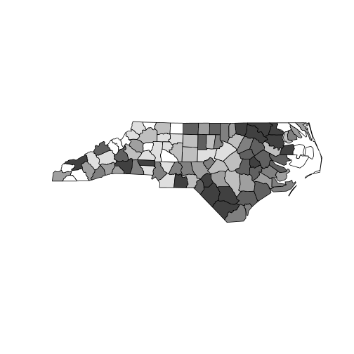
The following plot shows a SpatialPolygonsDataFrame, using line densities
rrt <- nc$SID74/nc$BIR74
brks <- quantile(rrt, seq(0,1,1/7))
cols <- grey((length(brks):2)/length(brks))
dens <- (2:length(brks))*3
plot(nc, density=dens[findInterval(rrt, brks, all.inside=TRUE)])
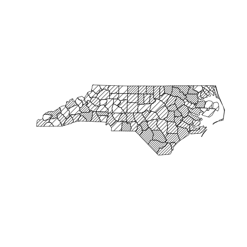
Plot a grid file, using base plot:
plot(meuse.grid)
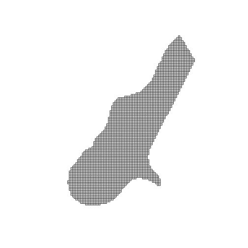
image(meuse.grid["dist"])
points(meuse)
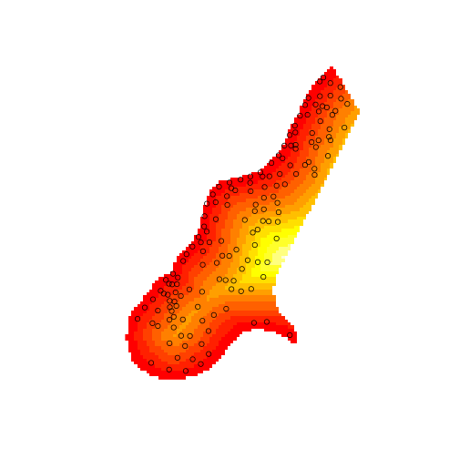
image(meuse.grid["dist"])
plot(meuse.grid, add = TRUE)
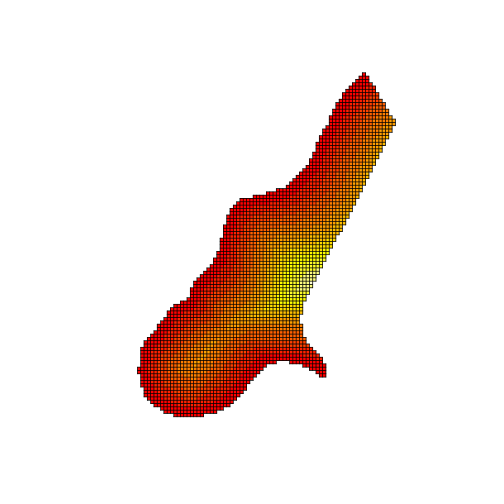
The following plot colours points with a legend in the plotting area and adds scales:
spplot(meuse, "zinc", do.log = TRUE,
key.space=list(x=0.2,y=0.9,corner=c(0,1)),
scales=list(draw=T))
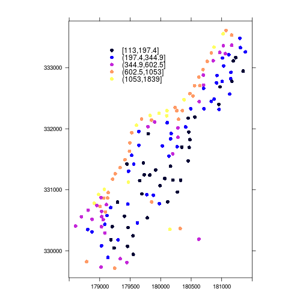
The following plot has coloured points plot with legend in plotting area and scales; it has a non-default number of cuts with user-supplied legend entries:
spplot(meuse, "zinc", do.log = TRUE,
key.space=list(x=0.2,y=0.9,corner=c(0,1)),
scales=list(draw=T), cuts = 3,
legendEntries = c("low", "intermediate", "high"))
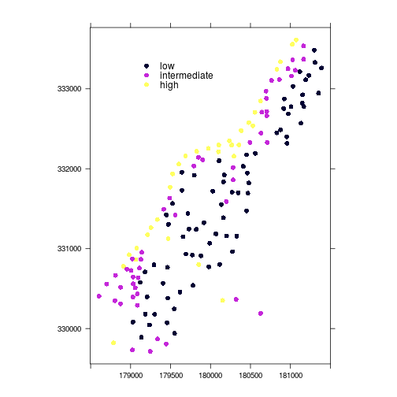
The following plot adds a scale bar and north arrow:
scale = list("SpatialPolygonsRescale", layout.scale.bar(),
offset = c(178600,332490), scale = 500, fill=c("transparent","black"))
text1 = list("sp.text", c(178600,332590), "0")
text2 = list("sp.text", c(179100,332590), "500 m")
arrow = list("SpatialPolygonsRescale", layout.north.arrow(),
offset = c(178750,332000), scale = 400)
spplot(meuse, "zinc", do.log=T,
key.space=list(x=0.1,y=0.93,corner=c(0,1)),
sp.layout=list(scale,text1,text2,arrow),
main = "Zinc (top soil)")

The following plot has north arrow and text outside panels
rv = list("sp.polygons", meuse.riv, fill = "lightblue")
scale = list("SpatialPolygonsRescale", layout.scale.bar(),
offset = c(180500,329800), scale = 500, fill=c("transparent","black"), which = 1)
text1 = list("sp.text", c(180500,329900), "0", which = 1)
text2 = list("sp.text", c(181000,329900), "500 m", which = 1)
arrow = list("SpatialPolygonsRescale", layout.north.arrow(),
offset = c(178750,332500), scale = 400)
spplot(meuse["zinc"], do.log = TRUE,
key.space = "bottom",
sp.layout = list(rv, scale, text1, text2),
main = "Zinc (top soil)",
legend = list(right = list(fun = mapLegendGrob(layout.north.arrow()))))
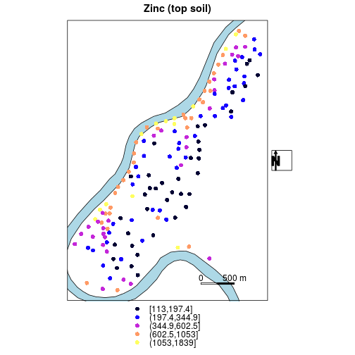
The same plot; north arrow now inside panel, with custom panel function instead of sp.layout
spplot(meuse, "zinc", panel = function(x, y, ...) {
sp.polygons(meuse.riv, fill = "lightblue")
SpatialPolygonsRescale(layout.scale.bar(), offset = c(179900,329600),
scale = 500, fill=c("transparent","black"))
sp.text(c(179900,329700), "0")
sp.text(c(180400,329700), "500 m")
SpatialPolygonsRescale(layout.north.arrow(),
offset = c(178750,332500), scale = 400)
panel.pointsplot(x, y, ...)
},
do.log = TRUE, cuts = 7,
key.space = list(x = 0.1, y = 0.93, corner = c(0,1)),
main = "Top soil zinc concentration (ppm)")
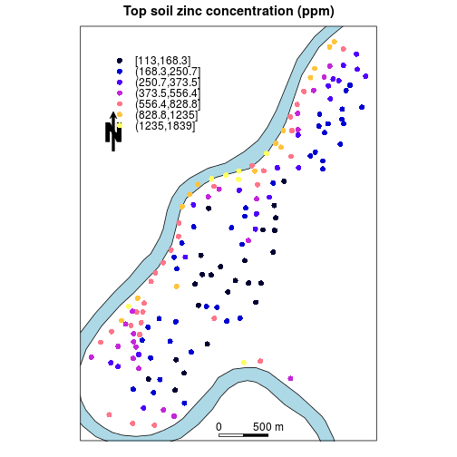
A multi-panel plot, scales + north arrow only in last plot: using
the which argument in a layout component (if which=4 was set
as list component of sp.layout, the river would as well be drawn
only in that (last) panel)
rv = list("sp.polygons", meuse.riv, fill = "lightblue")
scale = list("SpatialPolygonsRescale", layout.scale.bar(),
offset = c(180500,329800), scale = 500, fill=c("transparent","black"), which = 4)
text1 = list("sp.text", c(180500,329900), "0", cex = .5, which = 4)
text2 = list("sp.text", c(181000,329900), "500 m", cex = .5, which = 4)
arrow = list("SpatialPolygonsRescale", layout.north.arrow(),
offset = c(181300,329800),
scale = 400, which = 4)
cuts = c(.2,.5,1,2,5,10,20,50,100,200,500,1000,2000)
spplot(meuse, c("cadmium", "copper", "lead", "zinc"), do.log = TRUE,
key.space = "right", as.table = TRUE,
sp.layout=list(rv, scale, text1, text2, arrow), # note that rv is up front!
main = "Heavy metals (top soil), ppm", cex = .7, cuts = cuts)

Comparing four kriging varieties in a multi-panel plot with shared scale:
rv = list("sp.polygons", meuse.riv, fill = "blue", alpha = 0.1)
pts = list("sp.points", meuse, pch = 3, col = "grey", alpha = .5)
text1 = list("sp.text", c(180500,329900), "0", cex = .5, which = 4)
text2 = list("sp.text", c(181000,329900), "500 m", cex = .5, which = 4)
scale = list("SpatialPolygonsRescale", layout.scale.bar(),
offset = c(180500,329800), scale = 500, fill=c("transparent","black"), which = 4)
library(gstat)
v.ok = variogram(log(zinc)~1, meuse)
ok.model = fit.variogram(v.ok, vgm(1, "Exp", 500, 1))
# plot(v.ok, ok.model, main = "ordinary kriging")
v.uk = variogram(log(zinc)~sqrt(dist), meuse)
uk.model = fit.variogram(v.uk, vgm(1, "Exp", 300, 1))
# plot(v.uk, uk.model, main = "universal kriging")
meuse[["ff"]] = factor(meuse[["ffreq"]])
meuse.grid[["ff"]] = factor(meuse.grid[["ffreq"]])
v.sk = variogram(log(zinc)~ff, meuse)
sk.model = fit.variogram(v.sk, vgm(1, "Exp", 300, 1))
# plot(v.sk, sk.model, main = "stratified kriging")
zn.ok = krige(log(zinc)~1, meuse, meuse.grid, model = ok.model, debug.level = 0)
zn.uk = krige(log(zinc)~sqrt(dist), meuse, meuse.grid, model = uk.model, debug.level = 0)
zn.sk = krige(log(zinc)~ff, meuse, meuse.grid, model = sk.model, debug.level = 0)
zn.id = krige(log(zinc)~1, meuse, meuse.grid, debug.level = 0)
zn = zn.ok
zn[["a"]] = zn.ok[["var1.pred"]]
zn[["b"]] = zn.uk[["var1.pred"]]
zn[["c"]] = zn.sk[["var1.pred"]]
zn[["d"]] = zn.id[["var1.pred"]]
spplot(zn, c("a", "b", "c", "d"),
names.attr = c("ordinary kriging", "universal kriging with dist to river",
"stratified kriging with flood freq", "inverse distance"),
as.table = TRUE, main = "log-zinc interpolation",
sp.layout = list(rv, scale, text1, text2)
)

Reuse these results; universal kriging standard errors; grid plot with point locations and polygon (river):
rv = list("sp.polygons", meuse.riv, fill = "blue", alpha = 0.1)
pts = list("sp.points", meuse, pch = 3, col = "grey", alpha = .7)
spplot(zn.uk, "var1.pred",
sp.layout = list(rv, scale, text1, text2, pts),
main = "log(zinc); universal kriging using sqrt(dist to Meuse)")

zn.uk[["se"]] = sqrt(zn.uk[["var1.var"]])
spplot(zn.uk, "se", sp.layout = list(rv, pts),
main = "log(zinc); universal kriging standard errors")
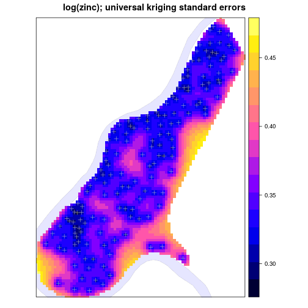
arrow = list("SpatialPolygonsRescale", layout.north.arrow(),
offset = c(-76,34), scale = 0.5, which = 2)
spplot(nc, c("SID74", "SID79"), names.attr = c("1974","1979"),
colorkey=list(space="bottom"), scales = list(draw = TRUE),
main = "SIDS (sudden infant death syndrome) in North Carolina",
sp.layout = list(arrow), as.table = TRUE)

arrow = list("SpatialPolygonsRescale", layout.north.arrow(),
offset = c(-76,34), scale = 0.5, which = 2)
#scale = list("SpatialPolygonsRescale", layout.scale.bar(),
# offset = c(-77.5,34), scale = 1, fill=c("transparent","black"), which = 2)
#text1 = list("sp.text", c(-77.5,34.15), "0", which = 2)
#text2 = list("sp.text", c(-76.5,34.15), "1 degree", which = 2)
# create a fake lines data set:
## multi-panel plot with coloured lines: North Carolina SIDS
spplot(nc, c("SID74","SID79"), names.attr = c("1974","1979"),
colorkey=list(space="bottom"),
main = "SIDS (sudden infant death syndrome) in North Carolina",
sp.layout = arrow, as.table = TRUE)
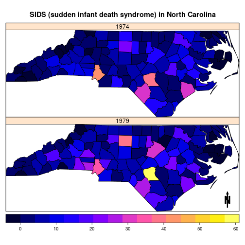
Bubble plots for cadmium and zinc:
b1 = bubble(meuse, "cadmium", maxsize = 1.5, main = "cadmium concentrations (ppm)",
key.entries = 2^(-1:4))
b2 = bubble(meuse, "zinc", maxsize = 1.5, main = "zinc concentrations (ppm)",
key.entries = 100 * 2^(0:4))
print(b1, split = c(1,1,2,1), more = TRUE)
print(b2, split = c(2,1,2,1), more = FALSE)

Factor variables using spplot:
# create two dummy factor variables, with equal labels:
set.seed(31)
nc$f = factor(sample(1:5,100,replace=T),labels=letters[1:5])
nc$g = factor(sample(1:5,100,replace=T),labels=letters[1:5])
library(RColorBrewer)
## Two (dummy) factor variables shown with qualitative colour ramp; degrees in axes
spplot(nc, c("f","g"), col.regions=brewer.pal(5, "Set3"), scales=list(draw = TRUE))

Both base plots and spplot can add web map backgrounds to plots,
to help referencing. Special care needs to be taken to project the
data into the web mercator (epsg 3857) projection.
Using regular plot and ggmap background maps
library(ggmap)
## Loading required package: ggplot2
## Warning: replacing previous import by 'grid::arrow' when loading 'ggmap'
## Warning: replacing previous import by 'grid::unit' when loading 'ggmap'
## Warning: replacing previous import by 'scales::alpha' when loading 'ggmap'
merc = CRS("+init=epsg:3857")
WGS84 = CRS("+init=epsg:4326")
meuse.ll = spTransform(meuse, WGS84)
bgMap = get_map(as.vector(bbox(meuse.ll)), source = "google", zoom = 13) # useless without zoom level
## Warning: bounding box given to google - spatial extent only approximate.
## converting bounding box to center/zoom specification. (experimental)
## Map from URL : http://maps.googleapis.com/maps/api/staticmap?center=50.974088,5.743115&zoom=13&size=640x640&scale=2&maptype=terrain&language=en-EN&sensor=false
# plot with ggmap-google bg:
plot(spTransform(meuse, merc), bgMap = bgMap, pch = 16, cex = .5)
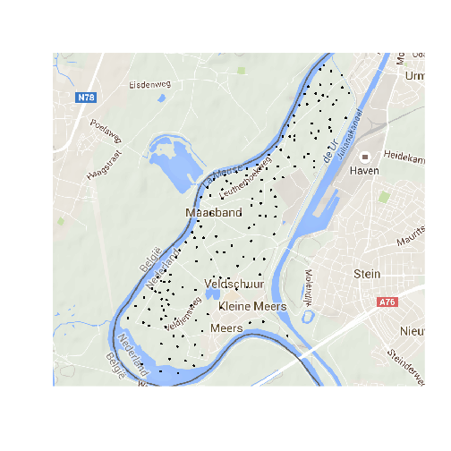
Using spplot with ggmap-google bg:
spplot(spTransform(meuse, merc), c("zinc", "lead"), colorkey = TRUE,
sp.layout = list(panel.ggmap, bgMap, first = TRUE))
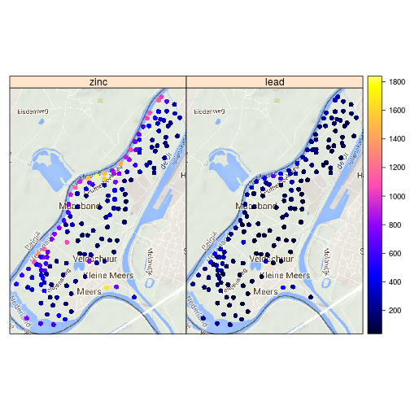
Using open streetmap background from ggmap:
bb = t(apply(bbox(meuse.ll), 1, bbexpand, .04))
bgMap = get_map(as.vector(bb), source = "osm") # WGS84 for background map
plot(spTransform(meuse, merc), bgMap = bgMap, pch = 16, cex = .5)
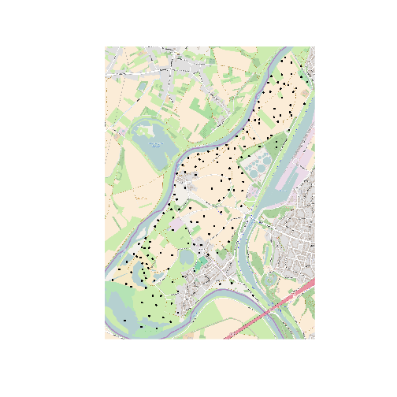
Using RgoogleMaps:
center = apply(coordinates(meuse.ll), 2, mean)[2:1]
library(RgoogleMaps)
g = GetMap(center=center, zoom=13) # google
par(mar = rep(0,4)) # fill full device
plot(spTransform(meuse, merc), bgMap = g, pch = 16, cex = .5)
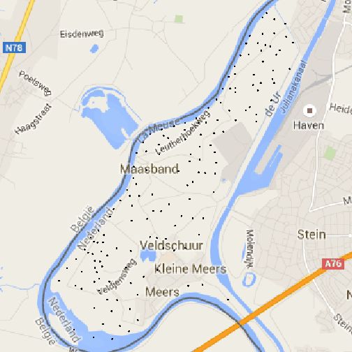
Using RgoogleMaps and spplot:
spplot(spTransform(meuse, merc), c("zinc", "lead"), colorkey = TRUE,
sp.layout = list(panel.RgoogleMaps, g, first = TRUE),
scales = list(draw = TRUE))
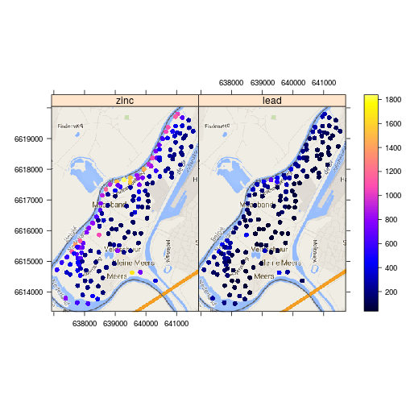
Here is a Norway boundary example:
# Norway boundary example:
library(cshapes)
## Loading required package: plyr
##
## Attaching package: 'plyr'
##
## The following object is masked from 'package:maps':
##
## ozone
cshp = cshp(as.Date("2000-01-1"))
norway = cshp[cshp$ISO1AL2 == "NO",]
bgMap = get_map(as.vector(bbox(norway))) # no is already in WGS84
## Warning: bounding box given to google - spatial extent only approximate.
## converting bounding box to center/zoom specification. (experimental)
## Map from URL : http://maps.googleapis.com/maps/api/staticmap?center=64.571314,17.931559&zoom=5&size=640x640&scale=2&maptype=terrain&language=en-EN&sensor=false
plot(spTransform(norway, merc), bgMap = bgMap, border = 'red')
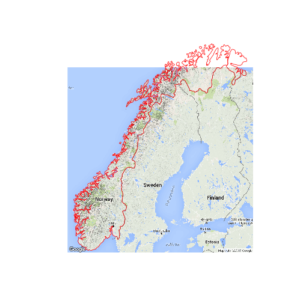
In order to plot polygon data with ggplot we need to prepare
(fortify) the data to a data.frame, and merge to each polygon
vertex (row) all corresponding attributes:
library(ggplot2)
f = fortify(nc, region = "CNTY_ID")
ff = merge(f, nc@data, by.x = "id", by.y = "CNTY_ID") # this replicates a lot of info
next, we can plot the data, but if we want one distance unit north
to approximately match one unit east, we additionally need to set
coord_map() to instruct ggplot this concerns longitude/latitude
coordinates:
ggplot(ff) +
aes(long, lat, group = group, fill = SID74) +
geom_polygon() +
coord_map()
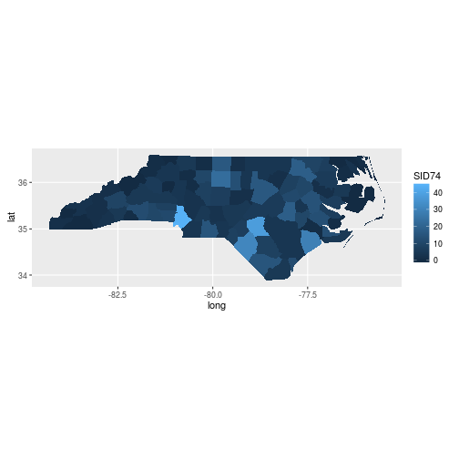
The ggplot2 wiki indicates that plotting polygons with holes may be problematic with ggplot.
Bubble plots can be generated e.g. by
ggplot(as.data.frame(meuse)) +
aes(x, y, size = zinc) +
geom_point() +
coord_equal()
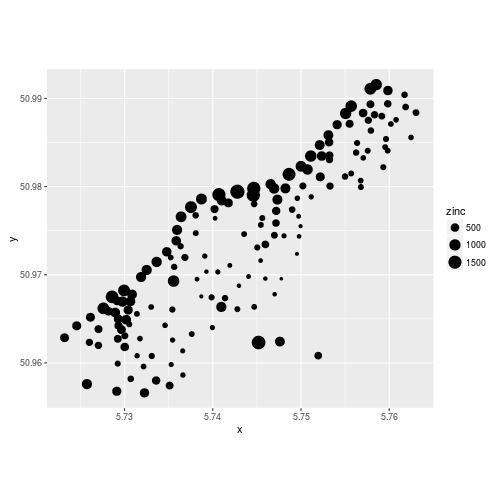
where coord_equal() sets the unit aspect ratio of the axes,
for projected coordinates.
The spatial task view contains pointers to other CRAN packages that have functionality for creating general or custom maps, in addition to pointers to packages that can be used for analyzing spatial data.
R packages leaflet and mapview provide interactive, browser-based maps building upon the leaflet javascript library. An example is:
library(mapview)
## Loading required package: leaflet
mapview(meuse.grid, "soil")@map
<!--html_preserve-->
<!--/html_preserve-->more examples are found here.
sessionInfo()
## R version 3.2.3 (2015-12-10)
## Platform: x86_64-pc-linux-gnu (64-bit)
## Running under: Ubuntu 14.04.3 LTS
##
## locale:
## [1] LC_CTYPE=en_US.UTF-8 LC_NUMERIC=C
## [3] LC_TIME=en_GB.UTF-8 LC_COLLATE=en_US.UTF-8
## [5] LC_MONETARY=en_GB.UTF-8 LC_MESSAGES=en_US.UTF-8
## [7] LC_PAPER=en_GB.UTF-8 LC_NAME=en_GB.UTF-8
## [9] LC_ADDRESS=en_GB.UTF-8 LC_TELEPHONE=en_GB.UTF-8
## [11] LC_MEASUREMENT=en_GB.UTF-8 LC_IDENTIFICATION=en_GB.UTF-8
##
## attached base packages:
## [1] methods stats graphics grDevices utils datasets base
##
## other attached packages:
## [1] mapview_1.0.0 leaflet_1.0.0 cshapes_0.4-2
## [4] plyr_1.8.3 RgoogleMaps_1.2.0.7 ggmap_2.5.2
## [7] ggplot2_2.0.0 RColorBrewer_1.1-2 gstat_1.1-1
## [10] rgeos_0.3-16 maps_3.0.1 rgdal_1.1-3
## [13] maptools_0.8-38 sp_1.2-2 knitr_1.11
##
## loaded via a namespace (and not attached):
## [1] zoo_1.7-12 OpenStreetMap_0.3.2 reshape2_1.4.1
## [4] rJava_0.9-7 lattice_0.20-33 colorspace_1.2-6
## [7] stats4_3.2.3 htmltools_0.3 yaml_2.1.13
## [10] base64enc_0.1-3 spacetime_1.1-5 hexbin_1.27.1
## [13] R.oo_1.19.0 foreign_0.8-66 R.utils_2.2.0
## [16] jpeg_0.1-8 foreach_1.4.3 stringr_1.0.0
## [19] munsell_0.4.2 gtable_0.1.2 raster_2.5-2
## [22] R.methodsS3_1.7.0 htmlwidgets_0.5 mapproj_1.2-4
## [25] codetools_0.2-14 evaluate_0.8 labeling_0.3
## [28] latticeExtra_0.6-26 parallel_3.2.3 gdalUtils_2.0.1.7
## [31] proto_0.3-10 xts_0.9-7 Rcpp_0.12.3
## [34] geosphere_1.5-1 satellite_0.2.0 scales_0.3.0
## [37] jsonlite_0.9.19 FNN_1.1 rjson_0.2.15
## [40] png_0.1-7 digest_0.6.9 stringi_1.0-1
## [43] rasterVis_0.37 RJSONIO_1.3-0 grid_3.2.3
## [46] tools_3.2.3 magrittr_1.5 iterators_1.0.8
## [49] intervals_0.15.1